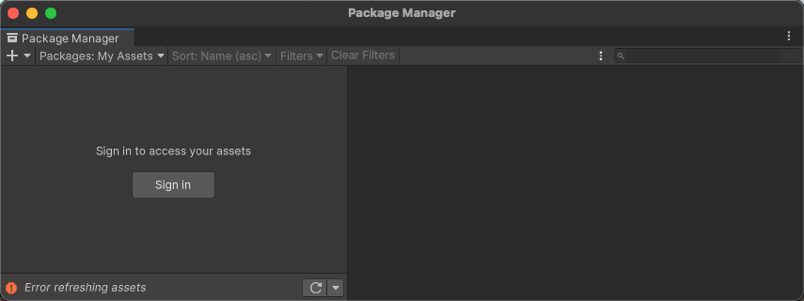

You can also run the Unity Package Manager Diagnostics tool if you are experiencing problems that might be network-related. For more information, see Diagnose network issues.
Package Manager 窗口中的错误消息
The Package Manager displays error indicators in the Package Manager window when it encounters problems.
System-wide issues
Network connection issues
Error messages appear in the status bar when the Package Manager has detected an issue that isn’t related to a specific package. For example, if the Package Manager can’t access the package registry server, it displays this message in the status bar:
If your network can’t reach the package registry server, it’s probably because there is a connection problem with the network. When you or your system administrator diagnose and fix the network error, the status bar clears.
If your network connection is working, but you aren’t signed into your Unity account, the Package Manager doesn’t display any Asset Store packages. When you try to use the My Assets context, the Package Manager displays an error in the status bar:

Logged out of Unity account
Click the Sign in button inside the list view to sign into your Unity account through the Unity Hub.
Package-specific issues
If a specific package has a problem when loading or installing (for example, when determining which package versions to load), the error icon () appears in the package list next to the compromised package (A). To find out what the problem is, open the compromised package’s details view to see the detailed error message (B):
This message can appear when you fetch a Unity package from a scoped registry. Unity signs packages that it creates, except for older packages, which aren’t necessarily re-signed in later releases. If you copy an unsigned Unity package from a scoped registry to another registry, Package Manager can’t determine if the package content is safe and identical to the original package.
If you encounter this message, try these solutions:
Use another version of the package.
Fetch the Unity package from the Unity Registry.
If you own the scoped registry, make sure you copy the newest version of the package from the Unity Registry.
Package version doesn’t have a valid signature
Packages have a signature to ensure that the content wasn’t changed before or during transit. An invalid signature typically occurs in the following situations:
Someone published the package with modifications on their own registry.
An error occurred while transferring the file to the end user.
In both cases, Package Manager considers the package to be potentially malicious.
When you encounter an invalid signature, you can try to install a different version of the package. You should also avoid using Unity packages from a registry other than the Unity Registry.
If you are sharing a Unity package that contains a fix, consider using a Git URL or embedding the package in your project.
未找到“git”可执行文件
如果尝试从 git URL 安装包，则会出现与此类似的消息：
Cannot perform upm operation: Unable to add package
[https://github.example.com/myuser/myrepository.git]:
No 'git' executable was found.Please install Git on your system and restart Unity [NotFound]
UnityEditor.EditorApplication:Internal_CallUpdateFunctions()
git-lfs：未找到命令
如果尝试下载使用 Git LFS（大型文件存储）的包，则可能会看到以下错误消息：
Error when executing git command. git-lfs filter-process: command not found.
Use git-credentials from a terminal or command prompt, then launch the Hub from the same terminal so that Unity has access to the cached or stored credentials.
Use SSH to authenticate instead. If you set up your SSH key without a passphrase, the Package Manager doesn’t have to decrypt it to authenticate with the Git server. If you decide to use a passphrase for added security, you can use the ssh-agent on either macOS or Windows to get around the authentication problem.
适用于 SSH 的解决方案
If you use the SSH protocol to install a package by Git URL, you might get an authentication error from Git. This typically happens when you set up a private SSH key on your local machine that is protected by a passphrase.
原生 Windows OpenSSH 版本的 ssh-agent 比 Git for Windows 默认提供的版本效果更好。此过程说明如何设置 OpenSSH 客户端并将密钥添加到其 ssh-agent。如果使用 Git for Windows，则还可以使原生 Windows OpenSSH 优先于 Git for Windows SSH 代理：
Make sure the OpenSSH Client is installed. To do this, search for it in the Windows Settings Optional features window (Start > Settings, then search for “Optional features”). This applies to Windows 10+.
检查 %PATH% 环境变量以确保显示原生 Windows OpenSSH 位置（例如 C:\WINDOWS\System32\OpenSSH\）。
注意：如果已在使用 Git for Windows，请确保在 %PATH% 变量中，原生 Windows OpenSSH 位置出现在 Git for Windows SSH 位置之前。这可确保 Windows 使用原生 Windows OpenSSH 代理而不是 Git for Windows SSH 代理。
在 PowerShell 终端中，启动 ssh-agent 进程并确保它自动启动：
# Set the ssh-agent service to start automatically and manually start it now
Get-Service ssh-agent | Set-Service -StartupType Automatic
# Run the ssh-agent process to start the ssh-agent service
ssh-agent
Import your key into the ssh-agent. To do this, run ssh-add on the command line and then follow the instructions. By default, the agent adds the %USERPROFILE%\.ssh\id_rsa key and prompts you for the password.
# Import the key
ssh-add
若要使用不同的密钥，可以将它指定为参数：
# Set the ssh-agent service to start automatically and manually start it now
ssh-add <your-secure-ssh-key-name>
如果您不记得密钥名称，则可以要求代理列出它们：
ssh-add -l
如果您安装了 Git for Windows，请重置 %GIT-SSH% 环境变量以确保 Git 始终使用原生 Windows OpenSSH 版本的 ssh-agent：
Use the ssh-add command to add your SSH keys to the ssh-agent running on your macOS system. The command parameter you use depends on your version of macOS:
To make sure you don’t need to re-enter your password after you restart your system, open the ~/.ssh/config file (or create one if you don’t find it), and add the following:
If you see the following message in the Console window when you try to download an Asset Store package, there might be a problem with your Asset Store cache:
[PackageManager] Error Failed to parse response.UnityEditor.AsyncHTTPClientone(State, Int32)
To solve this problem, delete all downloaded assets from the Asset Store package directory and then try to download the assets again.
Warning: If your project contains a lot of asset data, it might take a lot of time and bandwidth to re-download everything.